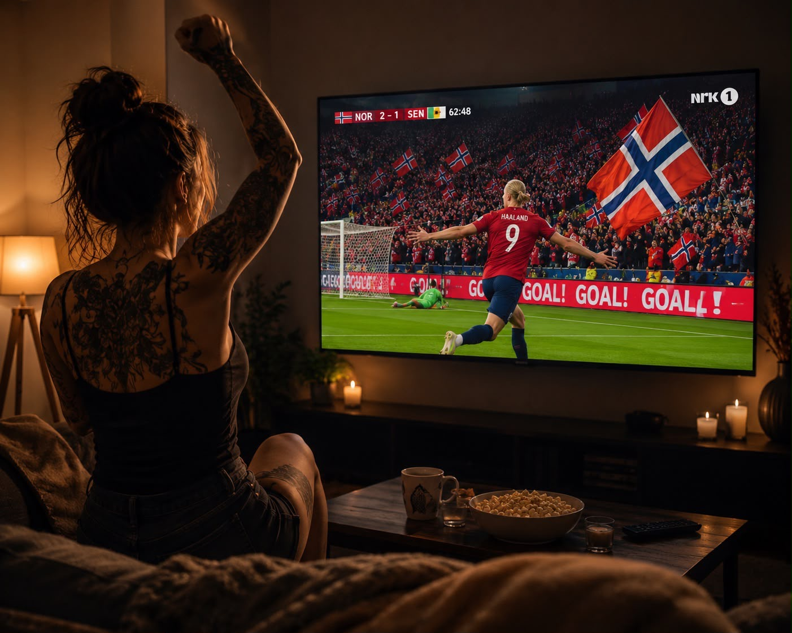

Ro
Jeg har lett sånn etter den.
Så mange ganger trodde jeg at det var den jeg fant der i vinglasset.
I den kalde pilsen.
Jeg har romantisert det så mange ganger.
Hvor godt det hadde vært å bare ta et glass.
Kjenne varmen bre seg i brystet.
Kjenne at promillen kunne bære meg litt.
Helt til jeg kom på hva som alltid skjedde med glass nummer to.
Roen jeg trengte for å se den filmen var borte.
Dømmekraften var svekket.
Og den roen jeg lengtet etter, var allerede forsvunnet før den egentlig hadde rukket å komme.
Også gleden da.
Herregud, som jeg har lett etter den de åtte månedene jeg har vært edru.
Jeg har lett etter den lykkefølelsen som sier pang i magen.
Den som gjør at musikken treffer meg så hardt at jeg får lyst til å danse.
Men den var jo også kortvarig.
For etter hvert som promillen steg, orket jeg ikke danse lenger.
Helt ærlig ble det heller til at jeg satte på en trist sang som minnet meg om noe som aldri ble.
Jeg har endelig forstått at verken ro eller glede er noe jeg kan tilføre ved hjelp av alkohol.
Det er ikke noe jeg kan bestemme når skal komme.
Det var jo det jeg prøvde på.
Jeg tilførte et stoff og trodde det var løsningen.
Et stoff jeg overbeviste meg selv om skulle hjelpe meg.
Men hva er egentlig alkohol, etanol?
Gift.
En nervegift.
Det er et psykoaktivt stoff.
Et kjemisk stoff som påvirker hjernen og sentralnervesystemet.
Det endrer sinnstilstanden ved å påvirke bevissthet, humør, tanker, følelser og atferd.
På sikt skaper det uro, søvnløshet, depresjon og angst.
Alkoholens store illusjon er at den gir deg lykke.
Men den er et depressivt stoff
– et sløvende middel som demper aktiviteten i sentralnervesystemet.
Likevel oppleves den første slurken som en opptur.
Det kalles den bifasiske effekten – en rus med to faser.
Fase én – oppturen.
De første tjue minuttene frigjør hjernen min dopamin, kroppens belønningssignal.
Samtidig dempes den delen av hjernen som styrer bekymringer og selvkontroll.
Jeg føler meg lettere.
Roligere.
Gladere.
Det var denne følelsen jeg jaktet.
Fase to – nedturen.
Kroppen min prøver å beskytte seg.
Alkohol er en gift som bringer hjernen ut av balanse, og derfor svarer kroppen med stresshormoner som adrenalin og kortisol.
I tillegg frigjøres dynorfin – et stoff som demper følelsene og etterlater uro, tomhet og nedstemthet.
Så kanskje er det ikke så rart at jeg aldri fant den roen og gleden jeg lette etter.
Jeg overstyrte jo mitt eget nervesystem.
Jeg romantiserte de første tjue minuttene.
Og bagatelliserte alt som kom etterpå.
Jeg har køddet med mitt eget nervesystem.
Da er det vel heller ikke så rart at livet ikke føltes som de første tjue minuttene av rusen den dagen jeg parkerte flaska.
Selvfølgelig gjorde det ikke det.
Jeg har løpt rundt i ring.
Nå går jeg gjennom.
Med alt det innebærer.
Og vet du hva?
Denne roen.
Denne gleden.
Den kommer når jeg minst venter det.
Ikke som en tjue minutters quick fix.
Den kommer helt ekte.
Helt plutselig.
Og jeg kjenner den.
Ikke bak et slør av promille.
Men som meg.
Jeg hadde aldri trodd at jeg skulle oppleve den midt på natta.
Klokken var 02.30.
Jeg satt alene i sofaen og så Norge spille mot Senegal i VM.
Jeg har ikke hatt glede av fotball på mange herrens år.
Men der satt jeg.
Og fulgte med.
Virkelig fulgte med.
Det var som om hodet mitt endelig hadde ro nok til å være til stede.
Så kom mål nummer to.
Haaland smalt ballen i nettet.
Jeg reiste meg fra sofaen uten å tenke.
Og da Norge vant 3–2, den andre seieren på to kamper, kjente jeg glede.
Ekte glede.
Ikke lånt.
Ikke kunstig.
Min.
Så satte laget seg ned på banen.
På rekke.
Kapteinen slo ett trommeslag.
Hele laget svarte:
RO.
Et nytt trommeslag.
RO.
Et til.
RO.
Jeg kjente gåsehuden bre seg.
Det handlet ikke bare om fotball.
Det handlet om fellesskap.
Om mennesker som har øvd.
Som har stått opp.
Som har spilt hverandre gode.
Som har båret hverandre fram mot en felles drøm.
Da forsto jeg noe.
Jeg har lett etter ro alene.
Men ro er ikke alltid noe vi finner alene.
Noen ganger finner vi den fordi vi tar de åretakene sammen.
Og akkurat da…
…kjente jeg det.
Jeg ror ikke alene.
